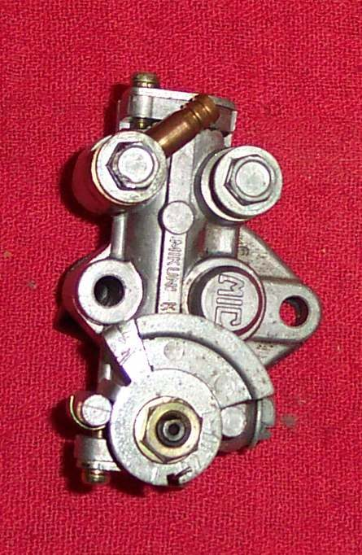

An oil injection pump must be full of oil with no air in it. If the oil tank has run dry, or a line has been removed, air gets into the pump and it delivers no oil. Bleeding it fills it again. Do it before the engine is run.
Safety
- Switch the engine off and keep it off. Work with the bike steady.
- Oil on the floor or on tyres is slippery. Wipe up any that spills.
You need
- Fresh two-stroke oil in the tank.
- A rag to catch oil.
Steps
- Clean and check the oil tank and the line to the pump. Make sure the vent in the tank or its cap is open. A blocked vent stops oil from flowing.
- Fill the tank with fresh two-stroke oil.
- Most pumps have a small bleed screw on the side. Loosen or remove it until oil runs from the hole in a steady stream with no bubbles. Refit and tighten it.
- If the pump has no bleed screw, loosen the bolt that holds the oil inlet hose until oil comes out there. Tighten it again.
- Check that the hoses are not kinked and are full of oil with no air bubbles up to the pump.
- Set the pump cable if it was disturbed: Set the oil pump cable so it follows the throttle.
Check your work
- No bubbles show in the clear oil line.
- A little smoke from the exhaust at idle and more when the throttle opens shows oil is reaching the engine.